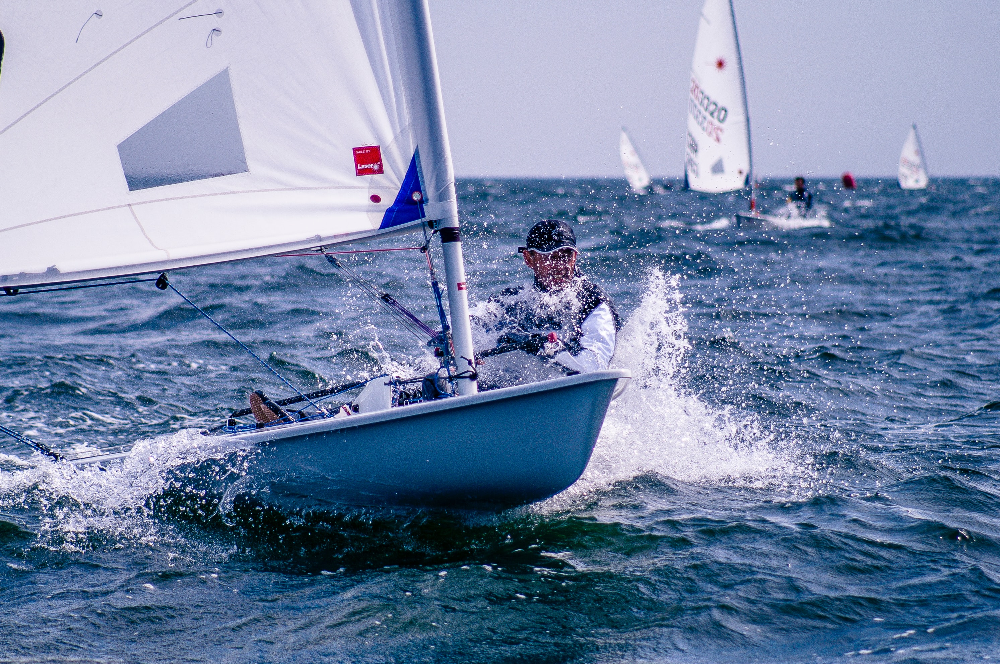

1 Konsep Dasar Perancangan Percobaan
Di bab ini, kita akan membedakan suatu percobaan dengan penelitian observasional dan prinsip dari percobaan tersebut, mengilustrasikan istilah-istilah dalam percobaan, menjelaskan konsep perancangan percobaan, dan mencoba beberapa metode penghitungan ukuran sampel.
1.1 Percobaan
1.1.1 Observasi terkadang tidak cukup
Sebuah penelitian mungkin dimulai dengan mengamati dunia sekitar, atau observasi. Mungkin kalian mengamati bahwa pedagang dengan harga murah memiliki lebih banyak pelanggan, atau kalian mengamati bahwa mahasiswa yang lebih banyak belajar memiliki nilai yang lebih tinggi. Namun, kadang hubungan yang ditemukan dalam suatu observasi lebih kompleks dari yang kita amati.
Bayangkan ada seorang nahkoda1. Kapal yang dikendalikan oleh nahkoda tersebut berada di tengah angin yang membelokkan kapal tersebut ke kanan dan kiri. Anggap bahwa nahkoda tersebut ingin kapal berlayar lurus, dan nahkoda ini sudah sangat berpengalaman sehingga dia dapat membelokkan kapalnya dengan tepat. Seorang pengamat akan melihat nahkoda tersebut membelokkan kemudi kapalnya ke kanan dan ke kiri, tetapi kapal tetap lurus. Pengamat yang tidak memiliki pengetahuan tentang kapal mungkin menyimpulkan bahwa kemudi tidak berpengaruh pada laju kapal!
Kasus ini merupakan contoh galat sistematis. Kita ingin mengetahui pengaruh arah belok kapal ke arah laju kapal, tetapi Nahkoda tidak membelokkan kapal secara acak, melainkan sesuai dengan kondisi angin agar kapal tetap melaju lurus.
1.1.2 Prinsip-prinsip percobaan
Lalu, bagaimana kita dapat mengetahui hubungan antara kemudi kapal dan laju kapal?
Pertama, mungkin kita dapat menyuruh nahkoda untuk membelokkkan kemudinya secara acak. Sebuah koin dapat dilempar, dan sisi yang muncul2 menentukan pembelokan kapal. Ini adalah pengacakan - sebelumnya, jika terjadi angin tertentu, nahkoda pasti membelokkan kapal berkebalikan dengan pengaruh angin tersebut. Peluang kemudi diputar ke kanan dan kiri tidak seimbang. Sekarang, peluang tersebut sama, apapun kondisinya.
Kedua, mungkin ada hal-hal lain yang menyebabkan berubahnya hubungan kemudi dengan laju kapal. Mungkin kapal yang berbeda memiliki sistem kemudi yang berbeda, atau nahkoda berbeda memiliki kemampuan mengemudi berbeda. Oleh karena itu, kita ingin mengendalikan lingkungan: kapal homogen, nahkoda homogen. Atau, kita dapat mengulangi percobaan tersebut di kombinasi kapal dan nahkoda berbeda. Rancangan ini dapat disebut Rancangan Bujur Sangkar Latin, yang mengendalikan keragaman dari dua arah. Rancangan Acak Kelompok Lengkap mengendalikan keragaman dari satu arah, dan rancangan pengendalian lingkungan lainnya yang lebih kompleks dapat mengendalikan keragaman dari berbagai arah3. Namun, rancangan pengendalian lingkungan tersebut tidak perlu dipakai jika kondisi unit percobaaan sudah homogen - tidak ada sumber keragaman dari arah manapun.
Ketiga, ada variabilitas di percobaan ini. Kita tidak dapat mengobservasi semua sumber keragaman. Teori-teori yang dimiliki tentang cara dunia bekerja selalu berubah - beberapa waktu lalu, orang menganggap penyakit disebabkan oleh cairan tubuh (misal, darah) yang tidak seimbang, bukan jasad-jasad seperti bakteri dan virus. Kemungkinan bahwa teori yang paling mutakhir sekalipun belum dapat mengidentifikasi semua sumber keragaman sangat mungkin benar. Bahkan jika ada faktor yang dapat kita observasi, belum tentu semua faktor tersebut dapat dikendalikan. Mungkin, misal, tiba-tiba muncul ikan besar yang menabrak kapal saat belok, sehingga lajunya berubah4. OLeh karena itu, laju kapal pasti tetap beragam.
Agar keragaman tersebut dapat diukur, perlu lebih dari satu pengamatan. Kalau hanya ada satu pengamatan, simpangan baku akan menjadi nol. Selain itu, makin banyak ulangan, makin kecil ragam sebaran contoh rata-rata5.
Ini adalah inti percobaan: kita mengumpulkan respon (laju kapal) dari individu yang dikondisikan tertentu (nahkoda yang disuruh belok kanan atau kiri). Kita melakukan pengacakan, kontrol lingkungan, dan ulangan.
1.1.3 Aplikasikan konsep-konsep tersebut!
Setelah mengetahui perbedaan observasi dan prinsip dari percobaan, coba pikirkan:
- Masalah apa yang mungkin muncul jika kita lakukan observasi dalam kasus harga dagangan dan waktu belajar mahasiswa? Mengapa masalah itu terjadi? Bagaimana Anda akan membuat percobaan untuk mengatasi masalah tersebut?
- Ambil satu hal yang dapat diteliti di sekitar Anda. Apa yang Anda dapat simpulkan dari observasi? Apa yang Anda tidak dapat simpulkan dari observasi? Mengapa? Bagaimana Anda akan membuat percobaan untuk meneliti hal tersebut.
- Buat cause and effects diagram dari kasus yang Anda ambil.
1.2 Istilah dalam percobaan
Untuk memperkuat pengertian mengenai istilah percobaan yang Anda miliki, perhatikan contoh tersebut:
Seorang peneliti agronomi melakukan percobaan pada tanaman jagung varietas Arjuna. Jarak tanam di tiap petak diatur berebda-beda, yaitu 20 x 30 \(\text{cm}^2\), 30 x 30 \(\text{cm}^2\), dan 30 x 40 \(\text{cm}^2\). Jenis pupuk yang diberi selama penelitian adalah pupuk campuran NPK dengan dosis 100, 200, 300, dan 400 kg/ha. Untuk semua unit percobaan dilakukan penyiangan sebanyak 2 kali yaitu pada umur 3 dan 5 minggu setelah tanam.
— Mattjik dan Sumertajaya (2002)
1.2.1 Satuan percobaan, respons, dan pengamatan
Satuan percobaan dalam kasus ini adalah petak. Ingat bahwa satuan percobaan adalah unit terkecil yang diberi perlakuan. Tentu, jarak tanam hanya dapat ditentukan jika ada beberapa tanaman yang disusun di suatu petak; jika hanya ada satu tanaman, tidak mungkin dihitung jarak tanam. Dengan logika yang sama, sangat susah untuk melakukan pemupukan pada satu tanaman tertentu. Pupuk mungkin terbawa ke tanaman lain di petak yang sama oleh angin, air, atau faktor alam lain. Oleh karena itu, unit terkecil yang diberi perlakuan adalah petak.
Satuan pengamatan tergatung tujuan dari apa yang ingin diamati. Perubahan apa yang kita ingin amati? Misal respons kita adalah produktivitas. Produktivitas mungkin diukur dengan membandingkan berat jagung yang dihasilkan oleh petak tertentu - misal dengan satuan kg/ha. Maka, satuan pengamatan adalah petak, karena respons diukur di petak. Namun, jika kita ingin mengamati tinggi tanaman, maka yang diukur adalah tanaman, sehingga satuan pengamatan adalah tanaman.
1.2.2 Faktor, taraf, perlakuan, dan interaksi
Faktor dalam kasus ini adalah jarak tanam dan pupuk. Varietas dan penyiangan bukan faktor. Mengapa? Jarak tanam dan pupuk berbeda di tiap petak (satuan percobaan), tetapi semua petak ditanam varietas sama dan diberi penyiangan sama. Dalam menentukan faktor, pertanyaan yang penting adalah apa yang akan berbeda di tiap satuan percobaan.
Taraf adalah nilai dari faktor yang dicobakan. Dalam kasus ini, ada tiga jarak tanam berbeda (20 x 30 \(\text{cm}^2\), 30 x 30 \(\text{cm}^2\), 30 x 40 \(\text{cm}^2\)) yang merupakan taraf dari faktor jarak tanam. Ada empat dosis pupuk berbeda (100 kg/ha, 200 kg/ha, 300 kg/ha, 400 kg/ha) yang menjadi taraf faktor dosis pupuk.
Perlakuan adalah suatu prosedur atau metode yang diterapkan pada satuan percobaan. Asumsikan bahwa peneliti ingin menerapkan semua kombinasi taraf faktor pada satuan percobaan. Anggap \(d_{i}\) adalah jarak tanam ke-i dan \(p_{j}\) adalah dosis pupuk ke-j (misal \(p_{j=1}\) adalah 100 kg/ha, \(p_{j=2}\) adalah 200 kg/ha, dan seterusnya). Oleh karena itu, kita dapat menyusun (di LaTeX):
$$
\begin{bmatrix}
d_{1}p_{1} & d_{2}p_{1} & d_{3}p_{1}\\
d_{1}p_{2} & d_{2}p_{2} & d_{3}p_{2}\\
d_{1}p_{3} & d_{2}p_{3} & d_{3}p_{3}\\
d_{1}p_{4} & d_{2}p_{4} & d_{3}p_{4}
\end{bmatrix}
$$
\[ \begin{bmatrix} d_{1}p_{1} & d_{2}p_{1} & d_{3}p_{1}\\ d_{1}p_{2} & d_{2}p_{2} & d_{3}p_{2}\\ d_{1}p_{3} & d_{2}p_{3} & d_{3}p_{3}\\ d_{1}p_{4} & d_{2}p_{4} & d_{3}p_{4} \end{bmatrix} \]
Kita temukan bahwa jumlah perlakuan adalah \(3\cdot 4=12\), dan tiap perlakuan diberikan dalam matriks tersebut. Jika kita mengetahui ulangan, kita dapat menghitung jumlah unit percobaan dengan mengalikan perlakuan dan ulangan.
Anggap kita temukan bahwa pengaruh dosis pupuk selalu sama di tiap jarak tanam yang berbeda. Situasi ini berarti tidak ada interaksi. Namun, mungkin pengaruh dosis pupuk akan berbeda di jarak tanam yang berbeda - mungkin pengaruh pupuk lebih kecil di jarak tanam yang kecil karena tanaman berkompetisi mencari nutrisi. Kasus ini disebut interaksi, di mana pengaruh suatu level dari faktor berbeda jika level faktor lain berbeda.
1.2.3 Model tetap, acak, dan campuran (aplikasi teori)
Anggap Anda bertanya ke peneliti mengenai cara dia memilih taraf dari dosis pupuk dan jarak tanam. Model apa yang tepat berdasarkan jawaban peneliti?
- Dosis pupuk dan jarak tanam dipilih oleh peneliti secara langsung6.
- Peneliti melakukan proses pengacakan dari semua nilai dosis pupuk dan jarak tanam yang ada (misal dengan mengocok dan mengambil kertas berisi nilai dosis dan jarak tertentu)7.
- Peneliti mengacak nilai jarak tanam, tapi dosis pupuk dipilih sendiri8.
1.2.4 Rancangan perlakuan, pengedalian lingkungan, dan respon
Dalam penjelasan sebelumnya, kita telah menyentuh rancangan perlakuan dengan mengasumsikan bahwa peneliti ingin tahu pengaruh kombinasi tiap taraf dari kedua faktor. Ini disebut rancangan bersilang karena taraf dari tiap faktor saling bebas. Namun, bisa jadi beberapa dosis pupuk tertentu tidak bisa dipakai di jarak tanam kecil. Misal, untuk melakukan pemupukan 400 kg/ha perlu mesin tertentu yang terlalu besar di petak dengan jarak tanam 20 x 30 \(\text{cm}^2\). Taraf dari faktor tidak saling bebas, sehingga dia bersarang. Taraf-taraf tertentu bersarang pada taraf lain, misal pupuk 400 kg/ha hanya bersarang di jarak tanam besar, tidak bisa pergi ke jarak tanam kecil.
Lalu, bagaimana jika petak-petak tersebut memiliki kesuburan yang berbeda? Misal sebagian dari petak berada di hutan, sebagian lagi berada di dekat sungai, sebagian berada di gunung. Tentu, kondisi petak sebagai unit percobaan harus dikendalikan agar homogen - ini adalah rancangan pengendalian lingkungan.
Terakhir, misal Anda ingin mengukur tinggi tanaman. Apakah Anda ingin mengukur menggunakan penggaris? Meteran? Software? Jawaban pertanyaan ini adalah rancangan respon.
1.2.5 Aplikasi: studi-studi kasus
Temukan faktor, level, perlakuan, pengendalian lingkungan, satuan percobaan dan satuan pengamatan, jumlah ulangan, serta respons dari percobaan. Soal ini diambil dari Mattjik dan Sumertajaya (2002):
- Suatu Lembaga Penelitian Padi melakukan percobaan untuk mengetahui pengaruh penggunaan berbagai pestisida cair terhadap produksi padi. Percobaan dilakukan pada satu hamparan sawah yang mempunyai tingkat kesuburan atau kandungan bahan organik yang relatif sama. Masing-masing perlakuan diberikan pada lahan seluas 4 x 5 \(\text{m}^2\). Perlakuan yang dicobakan ada 7, yaitu Dol-Mix (1 kg), Dol-Mix (2 kg), DDT + \(\gamma-\)BHC, Azodrin, Dimecron-Boom, Dimecron-Knap, dan tanpa pestisida (sebagai kontrol), masing-masing diulang 4 kali. Respon yang diukur adalah produksi gabah per kg/ha. Hasil dari setiap petakan dikonversi ke dalam kg/ha.
- Percobaan lain pada Balai Penelitian Padi tersebut adalah ingin mengetahui pengaruh kerapatan benih terhadap produksi padi (kg/ha) pada varietas IR8. Kerapatan benih yang dicobakan adalah 25 kg benih/ha, 50 kg benih/ha, 75 kg benih/ha, 100 kg benih/ha, 125 kg benih/ha, 150 kg benih/ha. Lahan yang digunakan di perbuktin (lereng bukit), sehingga tingkat kesuburan tidak sama. Untuk itu petak dibagi jadi 4 kelompok. Masing-masing benih ditebarkan pada lahan seluas 5 x 5 \(\text{m}^2\) serta hasilnya dikonversi ke satuan kg/ha.
- Sebuah balai penelitian ingin mengetahui pengaruh varietas dan dosis pupuk terhadap tinggi tanaman tomat (cm). Dosis pupuk yang digunakan adalah 15, 30, dan 45. Jenis varietas yang digunakan adalah varietas 1, 2, dan 3. Tiap perlakuan diulang sebanyak 4 kali. Selain kombinasi perlakuan yang diberikan, semua kondisi relartif homogen. Setiap petak terdiri dari 10 tanaman tomat.
- Terdapat 3 jenis material untuk pembuatan baterai (A, B, C) yang dicobakan pada 3 temperatur (15 oF, 70 oF, 125 oF). Masing-masing perlakuan diulang sebanyak 3 kali. Dari percobaan tersebut ingin diketahui apakah jenis material dan suhu mempengaruhi daya tahan baterai? Apakah jenis material tertentu cocok untuk suhu tertentu?
1.3 Percobaan ke uji: perancangan percobaan
Kita telah melihat dua contoh percobaan (nahkoda dan varietas jagung). Bagaimana kita menarik kesimpulan dari percobaan tersebut? Suatu hipotesis mengenai keadaan dunia (misal, bahwa pengaruh faktor ke respon sebesar \(\beta\)) harus diuji. Fungsi perancangan percobaan adalah pembuatan dan pengujian hipotesis tersebut.
1.3.1 Penentuan ulangan
Ada tiga metode penetuan ulangan:
- Minimal 3
- Minimal derajat bebas galat 15
- Menggunakan formula di bawah:
\[ r\geq 2\left(Z_{\alpha/2}+Z_{\beta}\right)^2\left(\frac{\sigma}{\delta}\right)^2 \]
$$
r\geq 2\left(Z_{\alpha/2}+Z_{\beta}\right)^2\left(\frac{\sigma}{\delta}\right)^2
$$
Metode 2 dan 3 berkaitan erat dengan pengujian suatu hipotesis. Perhatikan bahwa:
- Uji-F yang digunakan di dalam ANOVA berupa rasio kuadrat tengah: KT perlakuan/KT galat. Sedangkan, kuadrat tengah galat adalah jumlah kuadrat galat dibagi derajat bebas galat. Pada saat kita memberi jumlah minimal pada derajat bebas galat, secara tidak langsung kita memengaruhi besar kuadrat tengah galat, yang memengaruhi staistik uji-F.
- Formula (3) sangat berkaitan dengan uji. \(\alpha\) adalah peluang menolak \(H_{0}\) jika \(H_{0}\) benar dalam suatu uji. Sedangkan \(\beta\) adalah peluang menerima \(H_{0}\) jika \(H_{1}\) benar9. Selain itu, \(\delta\) adalah perbedaan rataan yang diinginkan. Benang merah yang dapat diambil dari formula ini adalah menentukan jumlah ulangan, jika dalam menggunakan uji dapat mendeteksi perbedaan rataan sebesar \(\delta\) dengan peluang kesalahan sebesar \(\alpha\) dan \(\beta\), jika diketahui ragam populasi \(\sigma^2\).
Bagaimana kita menghitung nilai tersebut di R? Untuk formula 2, anggap kita menghitung RAL, sehingga rumus db galat adalah \(t(r-1)\). Oleh karena itu:
\[ \begin{aligned} t(r-1)&\geq15\\ r-1&\geq \frac{15}{t}\\ r&\geq \frac{15}{t}+1 \end{aligned} \]
$$
\begin{aligned}
t(r-1)&\geq15\\
r-1&\geq \frac{15}{t}\\
r&\geq \frac{15}{t}+1
\end{aligned}
$$
Anggap ada empat perlakuan:
Code
t=4
#ceiling dipakai untuk membulatkan ke atas
ceiling(15/t+1)[1] 5Bagaimana cara kita menghitung formula ketiga? Selain secara manual, dapat dibuat fungsi di R:
Code
jmlUlangan<-function(alpha,beta,popvar,delta)
{
#Temukan nilai Z. Note bahwa alpha dibagi 2
#lower.tail=T akan membuat nilai Z negatif, karena akan menghitung kuantil dari kiri.
Za=qnorm(alpha/2,lower.tail=F)
Zb=qnorm(beta,lower.tail=F)
r=2*((Za+Zb)^2)*(popvar/delta)^2
return(ceiling(r))
}
jmlUlangan(0.05,0.10,3,5)[1] 8Code
jmlUlangan(0.05,0.10,0.3,3)[1] 1Kalian dapt mengubah argumen dari fungsi tersebut untuk mencoba kombinasi nilai ukuran sampel yang berbeda. Note, hasil-hasil perhitungan dibulatkan ke atas karena:
- Jumlah ulangan pasti bilangan bulat. Perlakuan tidak mungkin diulang 3.5 kali, misal.
- Semua metode tersebut mensyaratkan minimal. Dalam kata lain, jumlah ulangan lebih dari sama dengan hasil rumus tersebut. Jika kita membulatkan saja, ada risiko angka tersebut dibulatkan menjadi angka yang lebih kecil dari hasil rumus. Oleh karena itu, pembulatan ke atas memastikan angka yang dibulatkan lebih besar atau sama dengan hasil rumus yang digunakan.
1.4 Pengayaan
Ukuran sampel juga dapat dihitung dengan fungsi power.anova.test di R. Power adalah kuasa uji, yang didefinisikan sebagai probabilitas suatu hipotesis nol ditolak jika hipotesis nol tersebut memang salah. Masukkan jumlah kelompok, ragam antara kelompok, ragam dalam kelompok, kuasa uji, dan taraf nyata yang diinginkan. Jumlah sampel diasumsikan NULL.
Code
power.anova.test(groups = 4,
between.var = 3, within.var = 5,
power=0.90, sig.level=0.05,
n=NULL)
Balanced one-way analysis of variance power calculation
groups = 4
n = 8.91936
between.var = 3
within.var = 5
sig.level = 0.05
power = 0.9
NOTE: n is number in each groupJika kita memiliki rata-rata per kelompok, rata-rata tersebut dapat dimasukkan:
Code
ratakel <- c(550, 598, 598, 646)
p <- power.anova.test(groups = length(ratakel),
between.var = var(ratakel), within.var = 6400,
power=0.9,sig.level=0.05,
n=NULL)
p
Balanced one-way analysis of variance power calculation
groups = 4
n = 20.68861
between.var = 1536
within.var = 6400
sig.level = 0.05
power = 0.9
NOTE: n is number in each groupContoh ini dijelaskan di buku Causal Inference: The Mixtape buatan Scott Cunningham↩︎
Misal jika muncul uang belok kanan, dan sebaliknya.↩︎
Rancangan Greko-Latin, misal, dapat mengendalikan tiga sumber keragaman↩︎
Kecuali Anda bisa berbicara dengan ikan, hal ini susah dikontrol↩︎
Ragam populasi adalah \(\sigma^2\), sedangkan ragam sebaran contoh rata-rata \(\frac{\sigma^2}{n}\).↩︎
Model tetap.↩︎
Model acak.↩︎
Model campuran↩︎
Sehingga \(H_{0}\) salah.↩︎